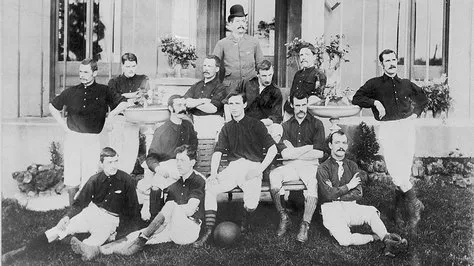
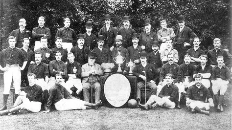
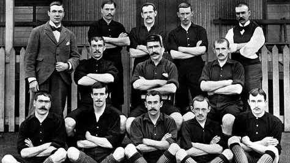
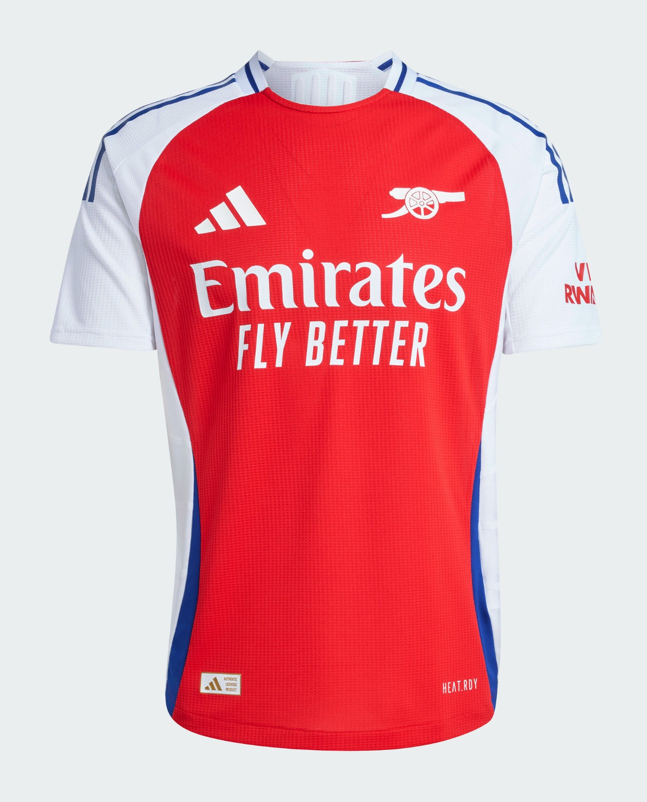
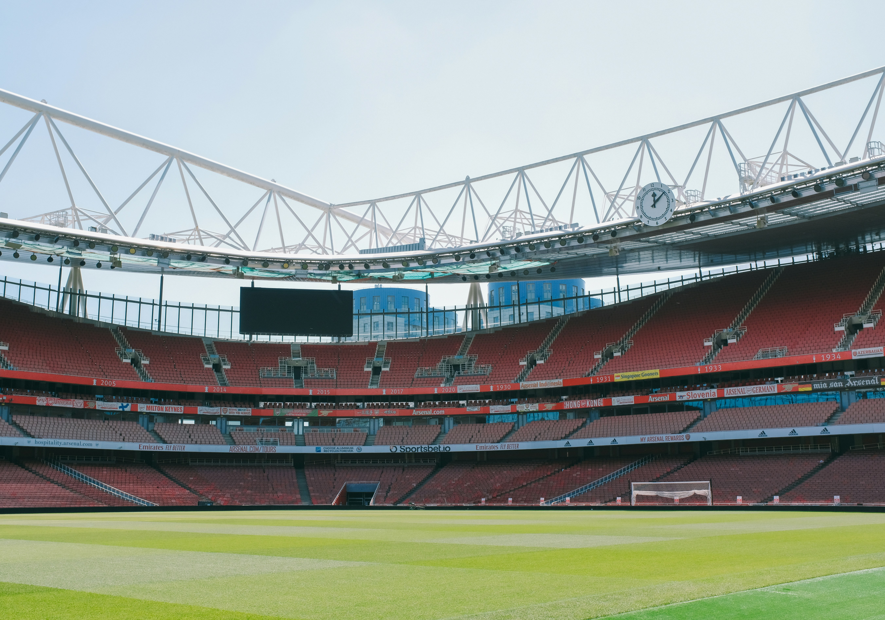
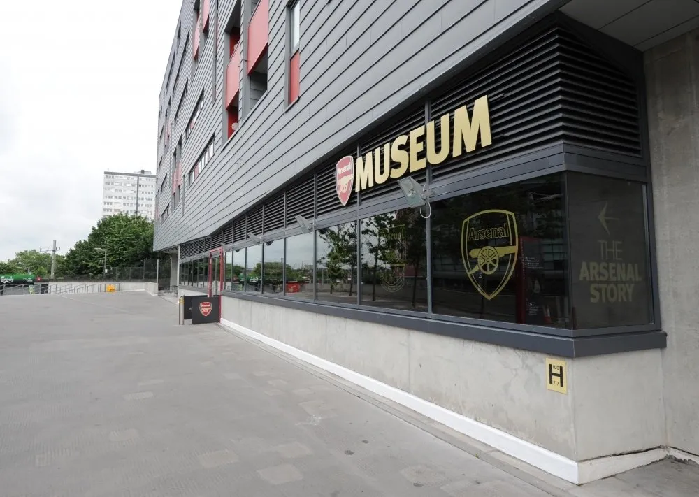
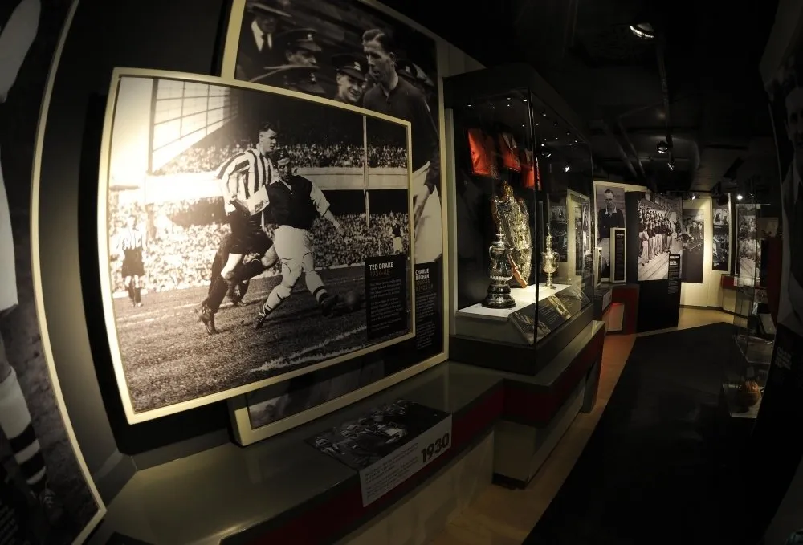
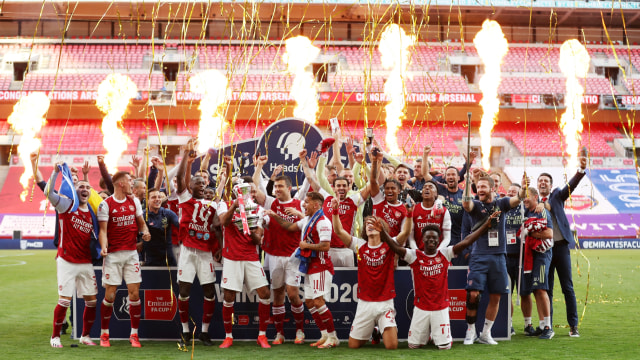
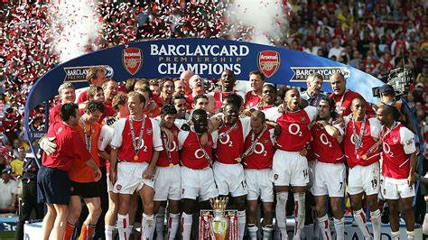
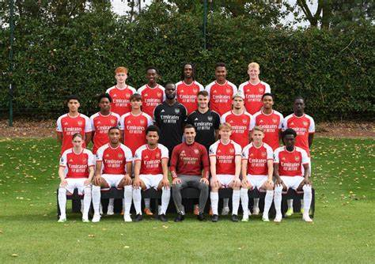

'Royal Arsenal' formed in Woolwich

Dial Square to north London

Woolwich Arsenal play their first game
Arsenal Football Club (dikenal pula sebagai Arsenal atau The
Gunners) adalah klub sepak bola profesional Inggris yang berbasis di
daerah Holloway, London. Didirikan pada 1886 dengan nama Dial
Square. Klub ini bermain di Liga Utama Inggris yang termasuk salah
satu klub tersukses di sepak bola Inggris, yang telah memenangkan 13
gelar kasta utama Liga Inggris (10 pada era Divisi Pertama dan 3
pada era Premier League) dan menjadi club pemenang gelar Piala FA
paling banyak yakni 14 gelar piala FA. Arsenal memegang rekor untuk
periode terpanjang berada di kasta puncak Liga Inggris tanpa pernah
terdegradasi sejak musim 1919 dan menjadi tim pada peringkat pertama
dalam klasemen Liga Inggris sepanjang abad ke-20. Arsenal menjadi
tim kedua di Inggris yang menyelesaikan semusim liga tanpa kalah
(musim 2003–04) dan tim pertama yang melakukannya pada era di mana
satu musim berlangsung 38 pertandingan.
Warna

Jersey 2024/2025
Sejarah warna Arsenal bermula pada tahun 1886 di Woolwich, ketika
klub awalnya menggunakan kombinasi warna hijau dan putih. Namun,
tahun 1933 menjadi titik balik penting ketika Arsenal secara resmi
mengadopsi warna merah dan putih, bersamaan dengan pindahnya klub
ke utara London. Warna merah dipilih untuk melambangkan passion,
kekuatan, keberanian, dan energi yang membara, sementara putih
berfungsi sebagai warna aksen yang memberikan kontras dan
kesederhanaan pada desain jersey.
Sepanjang sejarah, jersey kandang Arsenal selalu didominasi warna
merah, dengan putih digunakan untuk detail dan aksen. Meskipun
desain jersey telah berevolusi berkali-kali karena pengaruh
sponsor dan tren mode, kombinasi warna merah dan putih tetap
menjadi identitas inti klub. Beberapa teori menyebutkan bahwa
pemilihan warna terinspirasi dari warna-warna militer Inggris atau
tradisi sepak bola era tersebut. Kini, warna merah dan putih
Arsenal telah menjadi lebih dari sekadar kombinasi warna - ia
adalah simbol identitas, sejarah, dan tradisi klub yang sangat
dihormati di dunia sepak bola.
Stadion

Arsenal awalnya bermain di Tanah Manor, Plumstead, selama dua
dekade hingga 1913, sebelum pindah ke London utara. Sejak 2006,
mereka bermarkas di Stadion Emirates berkapasitas 60.500 kursi di
Ashburton Grove, dengan pertandingan peresmian melawan legenda
Belanda sebagai penghormatan untuk Dennis Bergkamp. Tim utama
berlatih di Pusat Pelatihan Shenley, Hertfordshire, sejak 1999,
sementara akademi U-18 bermain di Shenley, dan tim cadangan
bermain di Meadow Park, markas Boreham Wood.
Museum

Outside

Inside
Didirikan pada tahun 1886, Arsenal memiliki sejarah yang indah dari
masa klub di Stadion Woolwich, Highbury, dan Emirates dan museum
yang baru direnovasi menawarkan pengunjung kesempatan untuk
menikmati sejumlah pameran menarik. Banyak barang yang dipamerkan
disumbangkan dengan baik oleh mantan pemain yang memegang tempat
khusus dalam sejarah Arsenal. Sorotan termasuk sarung tangan kiper
Jens Lehmann yang dia kenakan untuk setiap pertandingan liga musim
tak terkalahkan Invincibles pada 2003/4, sepatu Michael Thomas dari
Anfield '89 dan kaos Piala Final FA Charlie George dari 1971.
Charlie George menghadiri pembukaan kembali dan saat ini memimpin
Legends Tours of Emirates Stadium bersama Perry Groves dan Nigel
Winterburn
Museum ini juga memiliki dua teater video yang mengesankan dan dua
puluh tampilan utama berdasarkan sejarah Arsenal yang membanggakan,
dari pembentukannya pada tahun 1886 hingga saat ini. Tampilan ini
termasuk pilihan kaus ikonik termasuk yang dikenakan oleh Alex James
di Final Piala FA 1936 dan kaos Final Piala FA 2015 yang
ditandatangani oleh skuad pemenang. Pengunjung juga dapat melihat
koleksi kaus, medali, dan piala dari mantan kapten Arsenal Joe
Mercer dan perisai untuk memperingati hat-trick klub di Kejuaraan
Liga dari 1933-1935. Museum Arsenal merupakan bagian dari tur
mandiri yang memungkinkan pengunjung untuk menjelajahi di balik
layar Stadion Emirates, rumah dari Arsenal Football Club. Tur
stadion termasuk masuk gratis ke museum Arsenal tetapi jika
pengunjung ingin pergi ke museum secara mandiri, mereka bisa. Museum
Arsenal di Stadion Emirates terletak di seberang pintu putar E di
Gedung Segitiga Utara, di sebelah jembatan Ken Friar.
Prestasi

Arsenal menjuarai Piala FA musim 2019/2020 dengan kemenangan 2-1
atas Chelsea di Wembley Stadium pada 2 Agustus. Arsenal, yang kini
mengoleksi 14 trofi Piala FA, menjadi klub dengan gelar terbanyak
di ajang ini. Chelsea unggul lebih dulu lewat gol Christian
Pulisic di menit ke-5, tetapi Pierre-Emerick Aubameyang menyamakan
kedudukan melalui penalti di menit ke-28. Pada babak kedua,
Chelsea kehilangan momentum akibat cedera pemain kunci, termasuk
Pulisic, dan kartu merah Mateo Kovacic. Aubameyang mencetak gol
kedua di menit ke-67, memastikan kemenangan Arsenal dan tiket ke
Liga Europa.

Arsenal pernah menorehkan rekor tak terkalahkan saat menjuarai
Premier League musim 2003/2004. Tim itu dinobatkan sebagai yang
terbaik dalam penghargaan peringatan 20 tahun Liga Primer Inggris.
Di musim 2003/04, Arsenal yang masih diperkuat oleh Thierry Henry,
Dennis Bergkamp, Robert Pires, dan juga Patrick Vierra, tampil
menjadi juara setelah mengemas hasil 26 kali menang dan 12 kali
hasil seri tanpa sekalipun kalah, dengan membuat 73 gol dan
kebobolan 26 gol. Arsenal menjuarai musim itu dengan keunggulan 11
poin atas Chelsea yang ada di posisi dua, dengan Henry menjadi top
skorer dengan 30 gol.
Academy

Arsenal Academy, yang saat ini dipimpin oleh Per Mertesacker,
dikenal sebagai salah satu akademi terbaik di Inggris. Akademi ini
berbasis di Hale End untuk pembinaan pemain muda dan di London
Colney untuk tim yang lebih senior. Programnya mencakup kelompok
usia U9 hingga U21, dengan tim U21 bermain di Premier League 2 dan
tim U18 di U18 Premier League. Selain itu, akademi secara rutin
bersaing di FA Youth Cup.
Filosofi akademi berfokus pada pengembangan pemain yang memiliki
teknik tinggi, pemahaman taktis yang baik, serta karakter yang
sesuai dengan nilai-nilai Arsenal. Pendidikan formal dan dukungan
mental juga diberikan untuk memastikan perkembangan pemain secara
menyeluruh. Beberapa lulusan sukses, seperti Bukayo Saka, Emile
Smith Rowe, dan Reiss Nelson, kini menjadi bagian penting dari tim
utama Arsenal. Akademi ini juga dikenal menghasilkan pemain
berkualitas yang berkarier di klub lain atau tim nasional. Dengan
investasi terus-menerus dalam pelatihan, fasilitas modern, dan
staf berkualitas, Arsenal Academy tetap menjadi pusat pengembangan
pemain muda yang kompetitif, baik di tingkat domestik maupun
internasional.